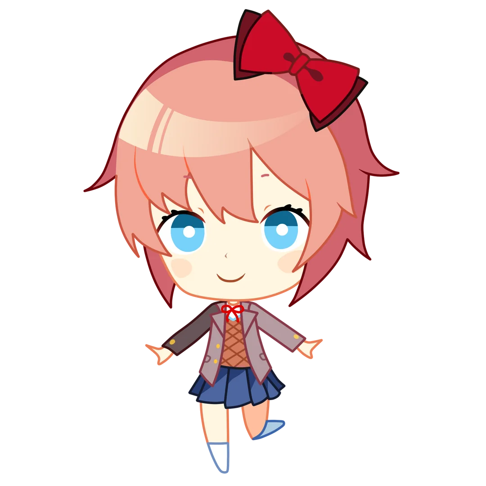

Sobre o Jogo
"Doki Doki Literature Club!" é um jogo visual novel desenvolvido pela Team Salvato. O jogo é conhecido por sua narrativa intrigante e suas reviravoltas inesperadas.
Personagens Principais
Sayori
Sayori é a melhor amiga do protagonista. Ela é conhecida por sua personalidade alegre e positiva.
Monika
Monika é a presidente do clube de literatura. Ela é muito inteligente e tem uma personalidade carismática.

Yuri
Yuri é uma membro do clube com uma paixão por literatura profunda e sombria. Ela é conhecida por seu comportamento tímido e reservado.
Natsuki
Natsuki é uma das membros mais jovens do clube e tem uma paixão por cupcakes e mangás.